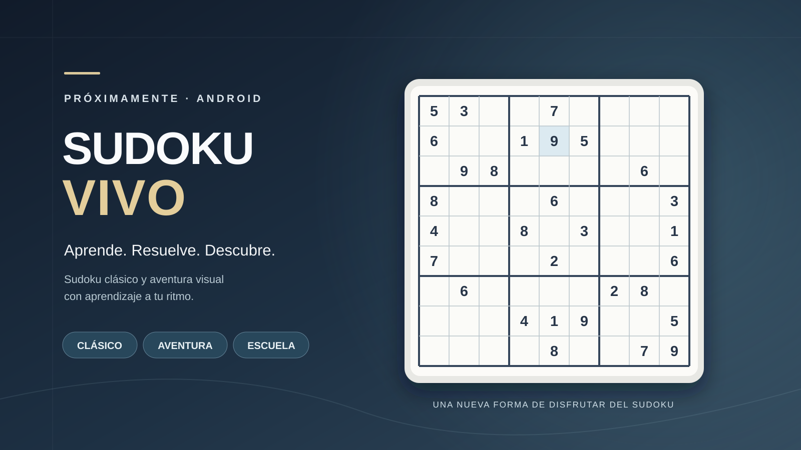

Sudoku clásico
Tableros de 9 × 9 con distintas dificultades y nuevos sudokus generados a partir de estructuras de solución única. Incluye notas, pistas, deshacer y guardado.

ANDROID · LÓGICA Y APRENDIZAJE
Aprende, resuelve y descubre. Disfruta de sudokus clásicos, recorre una aventura visual y aprende estrategias de resolución mediante una escuela interactiva, a tu propio ritmo.
Un diseño sobrio, pensado para adultos, con números legibles, ayudas opcionales, guardado de partidas y una experiencia tranquila. El cronómetro no tiene por qué marcar tu ritmo.
Tableros de 9 × 9 con distintas dificultades y nuevos sudokus generados a partir de estructuras de solución única. Incluye notas, pistas, deshacer y guardado.
Explora Naturaleza, Ciudades y Universo en nueve niveles. Cada región de 3 × 3 completada correctamente revela parte de una imagen. Guarda tus descubrimientos en una galería.
Diez lecciones para empezar desde cero, practicar filas, columnas, bloques y candidatos, y comprender técnicas lógicas. Las explicaciones aparecen por etapas.
Las partidas se guardan en el dispositivo. No necesitas crear una cuenta para jugar. La comprobación de actualizaciones utiliza la web oficial cuando la solicitas o cuando corresponde una revisión periódica.
Descarga la APK firmada de GitHub cuando esté disponible, abre el archivo desde Android y sigue las instrucciones del sistema. Si ya tenías una APK de pruebas firmada con otra clave, realiza primero una copia del progreso en Personalización → Guardar copia y comprueba que el archivo existe. Después podrás instalar la edición firmada y restaurarla.
Importante: las actualizaciones futuras deben utilizar la misma firma de publicación. Desinstalar la app puede borrar sus datos locales si no has exportado una copia.
Esta aplicación forma parte de la Biblioteca de herramientas, una colección personal de programas gratuitos y sin anuncios.